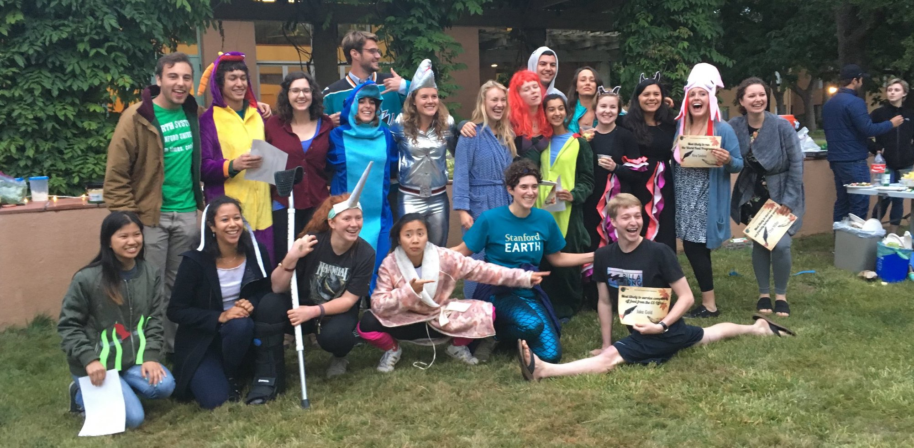

Co-Director of Students for a Sustainable Stanford
As co-director of Students for a Sustainable Stanford (SSS), the university's largest student sustainability group, I coordinate between peers and university administrators to achieve common sustainability goals. I facilitate goal-setting and strategizing for the group and push for systemic sustainability changes at the university that require administration-level support. Previously, as a project coordinator for SSS, I have directed projects aimed at making Stanford a more sustainable campus, including replacing lawns with drought-tolerant landscaping, encouraging green events, and institutionalizing food donations from campus eateries.
READ MORE »